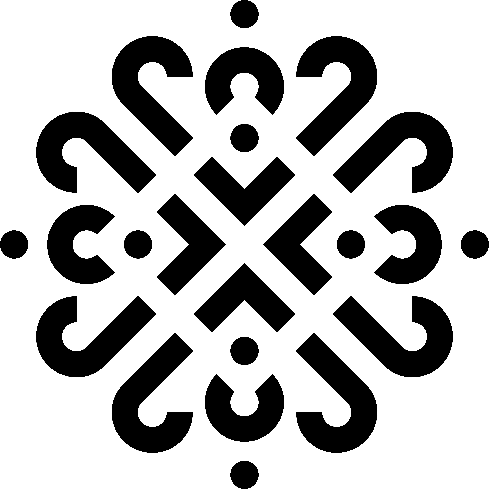

<!DOCTYPE html>
<html lang="en">
<head>
    <meta charset="UTF-8">
    <meta name="viewport" content="width=device-width, initial-scale=1.0">
    <title>Entregables</title>
    <link href="https://cdn.jsdelivr.net/npm/bootstrap@5.3.0/dist/css/bootstrap.min.css" rel="stylesheet">
    <link rel="stylesheet" href="CSS/Header.css">

    <style>
    /* Fonts */
    @font-face {
    font-family: 'Espinosa Nova Bold';
    src: url('fonts/EspinosaNovaPro-Bold.otf') format('truetype');
  }

    @font-face {
    font-family: 'Espinosa Nova Regular';
    src: url('fonts/EspinosaNovaPro-Regular.otf') format('truetype');
  }

    @font-face {
    font-family: 'Mukta Regular';
    src: url('fonts/Mukta-Regular.ttf') format('truetype');
  }

    @font-face {
    font-family: 'Mukta Extra Light';
    src: url('fonts/Mukta-ExtraLight.ttf') format('truetype');
}
        
        
    body {
    font-family: 'Mukta Extra Light';
    line-height: 1.6;
    background: url('IMG/patron.png') repeat;
    opacity: 0.9; /* Ajustable */
}

    /* Rectángulo de color (intercalado izquierda-derecha) */
    .colored-box {
    position: absolute;
    top: 10%;
    background-color: #88A845; /* Color personalizable */
    padding: 20px;
    max-width: 400px;
    color: black;
    display: flex;
    align-items: center;
    justify-content: space-between;
    width: fit-content;
}
/* Posición del rectángulo en secciones impares (izquierda) */
    .left-box {
    left: 5%;
}

        /* Posición del rectángulo en secciones pares (derecha) */
    .right-box {
    right: 5%;
    text-align: right;
}
        /* Logo en el rectángulo */
    .logo {
    width: 50px;
    height: auto;
    margin-left: 10px;
}
        /* Estilos para imágenes inclinadas */
    .tilted-image {
    display: block;
    margin: 80px auto 100px; /* Más espacio entre imagen inclinada y texto */
    max-width: 90%;
    box-shadow: 5px 5px 15px rgba(0,0,0,0.3);
}

    .tilted-left {
    transform: rotate(-5deg);
}

    .tilted-right {
    transform: rotate(5deg);
}
        /* Cintillo de pie de página */
    .footer-bar {
    background-color: #2f55a4;
    color: white;
    padding: 15px;
    display: flex;
    align-items: center;
    justify-content: space-between;
}
    
    .footer-logo {
    width: 50px;
    height: auto;
}
    .back-to-top {
    background-color: white;
    color: #2f55a4;
    border: none;
    padding: 5px 10px;
    cursor: pointer;
}
/* Ajustes para móviles */
    @media (max-width: 768px) {
        .colored-box {
        top: 5%;
        left: 2%;
        width: 90%;
        max-width: none;
        text-align: left !important;
    }
        .right-box {
        right: auto;
        left: 2%;
    }
} 
        /* Tamaño más pequeño para "Entregable X" */
    .small-title {
            font-size: 14px;
}

</style>
</head>

<body>

<!-- Header -->
<div id="header-container"></div>

<!-- Secciones dinámicas -->
<div class="container-fluid px-0">
        <script>
            const sections = [
                { img: 'Assets/images/muraltest.png', tiltedImg: 'Assets/images/muroxoco.png', title: 'Entregable 1', subtitle: 'Mural', text: 'Mural plasmando el aspecto festivo y cultural de San Sebastian Xoco', link: 'entregable1.html' },
                { img: 'Assets/images/Fotos editadas (finales)/torito2.png', tiltedImg: 'Assets/images/Fotos editadas (finales)/torito2.png', title: 'Entregable 2', subtitle: 'Documental', text: 'Descripción...', link: 'entregable2.html' },
                { img: 'Assets/images/Fotos editadas (finales)/torito1.png', tiltedImg: 'Assets/images/Fotos editadas (finales)/torito3.png', title: 'Entregable 3', subtitle: 'Señaletica', text: 'Descripción...', link: 'entregable3.html' },
                
            ];

            document.write('<div class="container-fluid px-0">');
            sections.forEach((section, index) => {
                const positionClass = index % 2 === 0 ? 'left-box' : 'right-box';
                const tiltClass = index % 2 === 0 ? 'tilted-left' : 'tilted-right';
                document.write(`
                    <div class="position-relative text-white">
                        
                        <div class="colored-box ${positionClass}">
                            <div>
                                <h2 class="fw-bold small-title">${section.title}</h2>
                                <h1 class="fw-bold d-inline">${section.subtitle}</h1>
                                <p>${section.text}</p>
                            </div>
                            
                        </div>
                    </div>
                    <div class="container my-5">
                        
                        <p>${section.text} - Para ver más, da clic abajo.</p>
                        <a href="${section.link}" class="btn btn-primary">Galeria</a>
                    </div>
                `);
            });
            document.write('</div>');
        </script>
    </div>

    <!-- Pie de página -->
    <footer class="footer-bar">
        
        <span>Xipil, derechos reservados</span>
        <button class="back-to-top" onclick="window.scrollTo({ top: 0, behavior: 'smooth' });">Subir</button>
    </footer>

<!-- Script de Bootstrap -->
<script src="https://cdn.jsdelivr.net/npm/bootstrap@5.3.0/dist/js/bootstrap.bundle.min.js"></script>

    <!-- Cargar el header -->
    <script type="module">
        import { loadHeader } from './JS/Header.js';
        document.addEventListener('DOMContentLoaded', loadHeader);
    </script>

</body>
</html>
